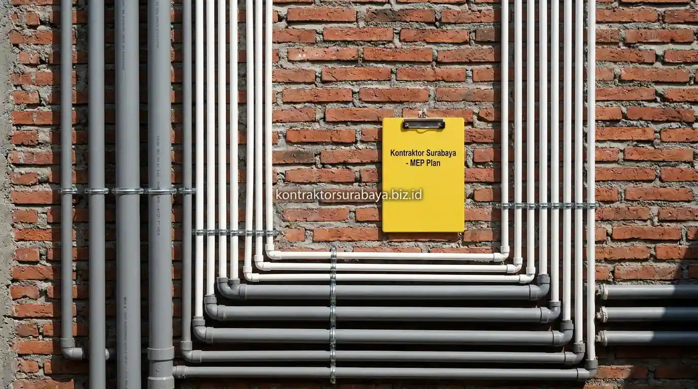

Salah satu kesalahan yang paling sering terjadi dalam proyek pembangunan rumah di Surabaya adalah meremehkan peran dokumen teknis instalasi sebelum konstruksi dimulai. Banyak pemilik rumah baru menyadari masalahnya setelah dinding sudah diplester dan lantai sudah dipasang—ketika pipa bocor tersembunyi di balik tembok atau saklar listrik muncul di posisi yang tidak nyaman digunakan. Semua itu bisa dicegah sejak awal dengan gambar kerja MEP yang matang.
MEP adalah singkatan dari Mechanical, Electrical, dan Plumbing—tiga sistem teknis yang menentukan kenyamanan fungsional rumah tinggal. Dalam layanan jasa arsitek Kontraktor Surabaya, gambar kerja MEP merupakan bagian integral dari paket gambar kerja lengkap yang diserahkan kepada klien sebelum pekerjaan di lapangan dimulai.
1. Fungsi Gambar Kerja MEP dalam Proyek Konstruksi Rumah
Gambar kerja MEP merinci jalur instalasi listrik, air bersih, dan air kotor pada setiap ruangan, menjadi acuan teknis yang digunakan tukang di lapangan agar seluruh instalasi terpasang sesuai rencana dan terkoordinasi dengan elemen struktur maupun arsitektur.
Tanpa dokumen ini, instalasi di lapangan sering dikerjakan berdasarkan perkiraan atau kebiasaan tukang, yang berisiko menimbulkan ketidaksesuaian dengan kebutuhan aktual penghuni—seperti titik stop kontak yang kurang atau jalur pipa yang tidak efisien karena tidak direncanakan sejak awal bersama gambar arsitektur. Lihat ragam proyek yang telah kami kerjakan di halaman galeri proyek.

2. Risiko Instalasi Air Bersih Tanpa Perencanaan Gambar Kerja yang Matang
Tekanan air yang tidak merata antar titik, jalur pipa yang saling silang tanpa rencana, potensi kebocoran tersembunyi di dalam dinding, dan jalur perbaikan yang sulit ditelusuri adalah empat risiko instalasi air bersih tanpa perencanaan gambar kerja yang matang.
- Tekanan Air Tidak Merata Antar Titik: Sering terjadi ketika jalur pipa tidak dihitung berdasarkan jarak dan elevasi yang tepat. Kamar mandi di lantai atas bisa kekurangan tekanan sementara titik lain di lantai bawah justru berlebihan.
- Jalur Pipa Saling Silang Tanpa Rencana: Meningkatkan risiko kebocoran pada titik sambungan yang tidak terencana dengan baik, terutama ketika dua jalur berbeda dari tukang yang berbeda bertemu tanpa koordinasi.
- Kebocoran Tersembunyi di Dalam Dinding: Menjadi lebih sulit terdeteksi tanpa dokumentasi jalur pipa yang jelas. Biaya perbaikannya jauh lebih mahal karena harus membongkar bagian dinding yang sudah jadi.
- Jalur Perbaikan Sulit Ditelusuri: Membuat proses perbaikan di kemudian hari memerlukan pembongkaran yang lebih luas dari seharusnya, padahal dengan gambar kerja, jalur pipa bisa ditelusuri secara presisi.
3. Risiko Instalasi Listrik Tanpa Gambar Kerja MEP yang Jelas
Beban listrik yang tidak terhitung dengan tepat, jalur kabel yang tidak terdokumentasi, potensi korsleting akibat sambungan yang dikerjakan asal, dan titik saklar yang tidak sesuai kebutuhan adalah empat risiko instalasi listrik tanpa gambar kerja MEP yang jelas.
- Beban Listrik Tidak Terhitung dengan Tepat: Berisiko membuat kapasitas panel listrik tidak mencukupi kebutuhan peralatan rumah tangga di kemudian hari, sehingga pemilik terpaksa mengajukan penambahan daya yang seharusnya bisa diantisipasi sejak awal.
- Jalur Kabel Tidak Terdokumentasi: Menyulitkan proses perbaikan maupun renovasi tambahan pada masa mendatang. Tukang baru yang masuk tidak tahu di mana kabel utama terpasang tanpa gambar acuan.
- Korsleting Akibat Sambungan yang Dikerjakan Asal: Meningkat tanpa standar pemasangan yang jelas dari gambar kerja. Sambungan pada titik percabangan yang tidak terdokumentasi menjadi titik rawan yang berisiko memicu kebakaran.
- Titik Saklar Tidak Sesuai Kebutuhan: Sering ditemukan pada instalasi tanpa perencanaan matang sejak tahap desain interior, misalnya saklar lampu yang posisinya tertutup pintu yang terbuka atau stop kontak yang terlalu jauh dari area kerja.
4. Bagaimana Gambar Kerja MEP Membantu Koordinasi Antar Tukang di Lapangan?
Gambar kerja MEP memberi acuan yang sama bagi tukang sipil, tukang listrik, dan tukang plumbing, sehingga jalur pipa dan kabel tidak saling bentrok dengan elemen struktur maupun instalasi lain yang dikerjakan secara bersamaan.
Tanpa acuan bersama ini, potensi konflik antar jalur instalasi menjadi lebih tinggi—misalnya jalur pipa air yang secara tidak sengaja ditempatkan melewati posisi kabel listrik utama. Koordinasi berbasis gambar kerja membantu setiap tim bekerja secara sinkron tanpa perlu banyak revisi dan pembongkaran ulang di lapangan yang menghabiskan waktu dan biaya tambahan. Untuk konsultasi penyusunan gambar kerja lengkap, kunjungi halaman jasa arsitek Surabaya kami.
5. Elemen yang Harus Ada dalam Gambar Kerja MEP yang Lengkap
Jalur pipa air bersih dan air kotor, titik instalasi listrik beserta kapasitas daya, jalur AC atau ventilasi mekanis, dan koordinasi dengan gambar struktur serta arsitektur adalah empat elemen yang harus ada dalam gambar kerja MEP yang lengkap.
- Jalur Pipa Air Bersih dan Air Kotor: Digambarkan secara detail untuk memastikan distribusi air merata ke seluruh titik kebutuhan dan air kotor mengalir dengan gravitasi yang tepat menuju saluran pembuangan.
- Titik Instalasi Listrik Beserta Kapasitas Daya: Membantu menentukan ukuran kabel dan panel yang sesuai dengan total beban rumah, termasuk penomoran grup dan kapasitas MCB untuk setiap grup instalasi.
- Jalur AC atau Ventilasi Mekanis: Direncanakan agar tidak mengganggu elemen struktur maupun estetika plafon. Posisi indoor unit, outdoor unit, dan jalur drainase kondensasi diplotkan secara eksplisit pada gambar.
- Koordinasi dengan Gambar Struktur dan Arsitektur: Memastikan jalur MEP tidak bentrok dengan posisi kolom, balok, atau elemen dekoratif lainnya, serta memastikan sleeve pipa sudah dipasang sebelum pengecoran beton dilakukan.
6. Kapan Gambar Kerja MEP Perlu Direvisi Selama Proses Desain?
Gambar kerja MEP perlu direvisi ketika terjadi perubahan denah ruangan, penambahan kebutuhan daya listrik, atau perubahan posisi titik air yang disepakati bersama klien setelah desain awal disetujui.
Perubahan pada gambar arsitektur—seperti pemindahan posisi kamar mandi atau penambahan ruangan baru—secara langsung memengaruhi jalur MEP yang telah direncanakan sebelumnya. Oleh karena itu, revisi gambar kerja MEP perlu dilakukan secara konsisten setiap kali ada perubahan signifikan pada desain arsitektur rumah agar dokumen yang digunakan di lapangan selalu sesuai dengan kondisi terkini yang disepakati.
7. Kesalahan Umum Akibat Tidak Memiliki Gambar Kerja MEP yang Lengkap
Titik instalasi yang tidak sesuai kebutuhan penghuni, jalur pipa dan kabel yang saling bentrok, kapasitas listrik yang tidak mencukupi di kemudian hari, dan kesulitan perbaikan akibat minimnya dokumentasi adalah empat kesalahan umum akibat tidak memiliki gambar kerja MEP yang lengkap.
- Titik Instalasi Tidak Sesuai Kebutuhan Penghuni: Sering ditemukan pada rumah yang dibangun tanpa perencanaan MEP yang matang sejak awal, seperti stop kontak yang jauh dari meja kerja atau titik air di posisi yang menyulitkan penempatan furnitur.
- Jalur Pipa dan Kabel Saling Bentrok: Berisiko menimbulkan kerusakan pada salah satu instalasi saat perbaikan instalasi lain dilakukan, misalnya kabel terpotong saat perbaikan pipa bocor dilakukan.
- Kapasitas Listrik Tidak Mencukupi di Kemudian Hari: Memaksa penghuni melakukan penambahan daya yang seharusnya bisa diantisipasi sejak awal melalui perhitungan beban listrik di gambar kerja MEP.
- Kesulitan Perbaikan Akibat Minimnya Dokumentasi: Membuat proses renovasi atau perbaikan memerlukan waktu dan biaya lebih besar dari seharusnya, karena tidak ada referensi jalur instalasi yang bisa diperiksa sebelum pembongkaran dilakukan.
"Gambar kerja MEP bukan dokumen formalitas—ia adalah panduan teknis yang menentukan apakah rumah yang dibangun akan nyaman digunakan selama puluhan tahun atau justru menjadi sumber masalah berulang setiap musim." — Erlang Sinatrya, Lead Project Engineer Kontraktor Surabaya
Perencanaan gambar kerja MEP yang matang sejak tahap desain membantu menghindari banyak masalah teknis yang baru terasa setelah rumah selesai dibangun. Pelajari cakupan layanan desain lengkap pada halaman jasa arsitek, atau lihat ragam layanan lain pada halaman layanan kami.